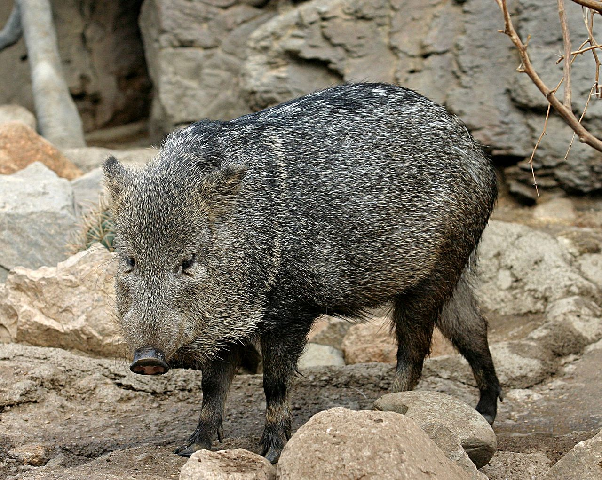
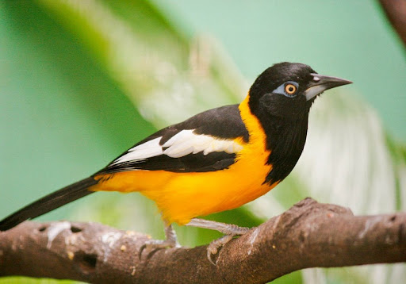
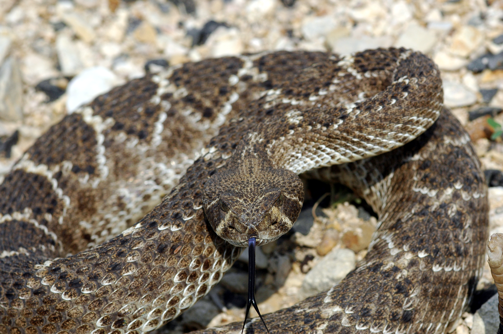

VENEZUELA'S DESERT WILDLIFE
COLLARED PECCARY

The Collared Peccary is a tough and adaptable pig-like mammal that thrives in Venezuela's arid scrublands and desert regions. Named for the pale band of fur around its neck, it lives in tight-knit herds that communicate through scent glands and vocalizations. Piglets are born reddish-brown, quickly darkening to the greyish-black of adults. Highly territorial, herds will fearlessly mob predators many times their size to defend their young.
VENEZUELAN TROUPIAL

The Venezuelan Troupial is the national bird of Venezuela and one of the most striking birds in all of South America. Its vivid orange-and-black plumage and melodious song make it a beloved symbol of the country. Unlike many birds, the Troupial does not build its own nest — instead it aggressively takes over the nests of other species. Fledglings begin with duller plumage before gradually developing the brilliant colors of the adult male.
IGUANA

Iguanas are among the most visible and iconic reptiles of Venezuela's arid zones, often seen basking on rocks and branches under the intense tropical sun. The Green Iguana is the more widespread species, capable of growing over 2 meters long, while the Black Iguana is smaller and more boldly patterned. Hatchlings emerge bright green before their color shifts with age and environment. Both species are expert climbers and strong swimmers, using their powerful tails as both rudder and weapon.
SIDEWINDER RATTLESNAKE

The Sidewinder Rattlesnake is a master of desert survival, using its distinctive sidewinding locomotion to move efficiently across loose sand and hot terrain while minimizing contact with the scorching ground. Juveniles are born with a single rattle segment that grows with each shed of skin. Adults in their coiled defensive posture are a formidable sight, capable of striking with remarkable speed. Despite their fearsome reputation, they play a vital role in controlling rodent populations across Venezuela's arid zones.